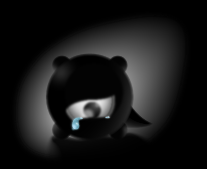

Loading…
Taking too long? Check your connection, or reload the page.
The game could not start due to unexpected errors. Try reloading the page.
The browser reset the game's graphics. Reload to continue - saved progress is kept, but the current level will restart.